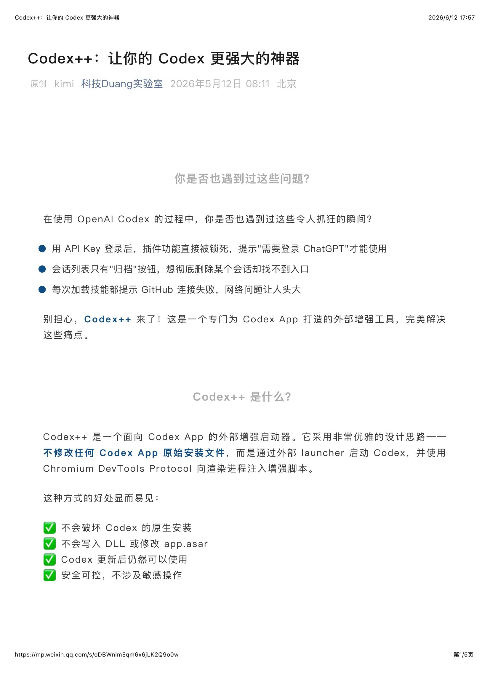
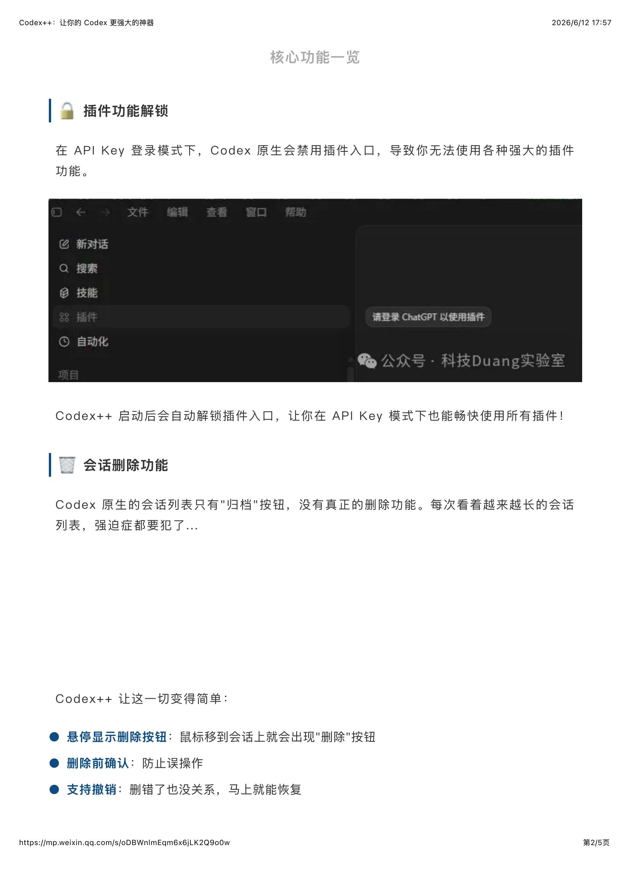
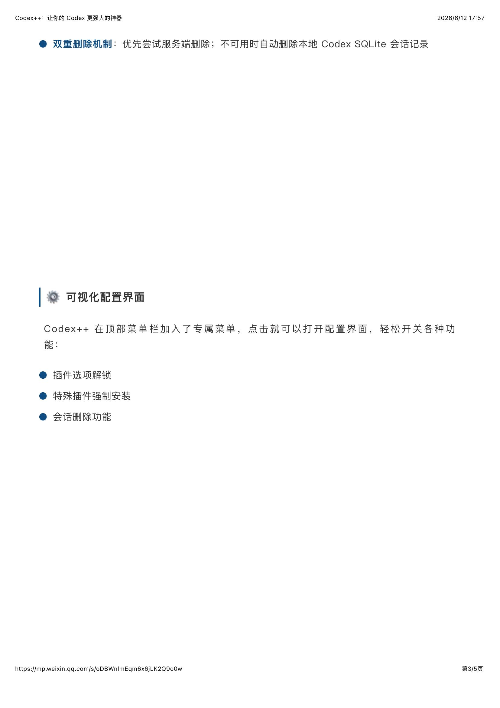
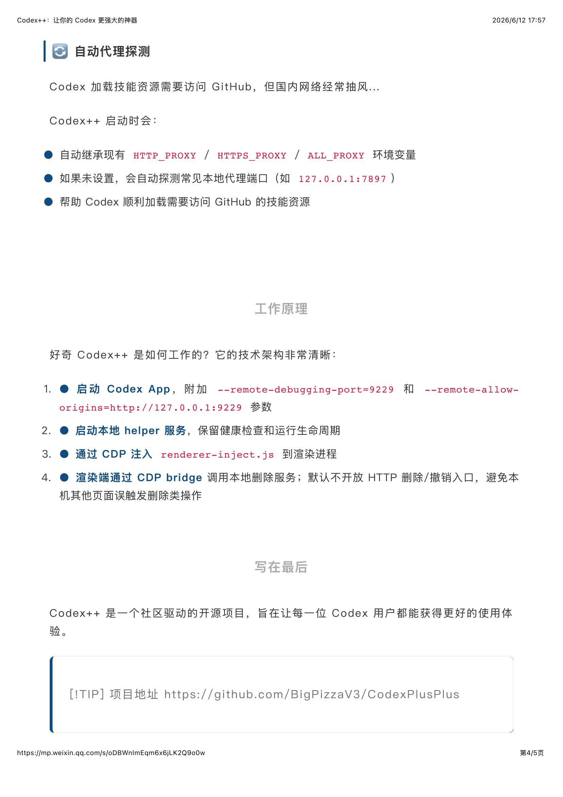
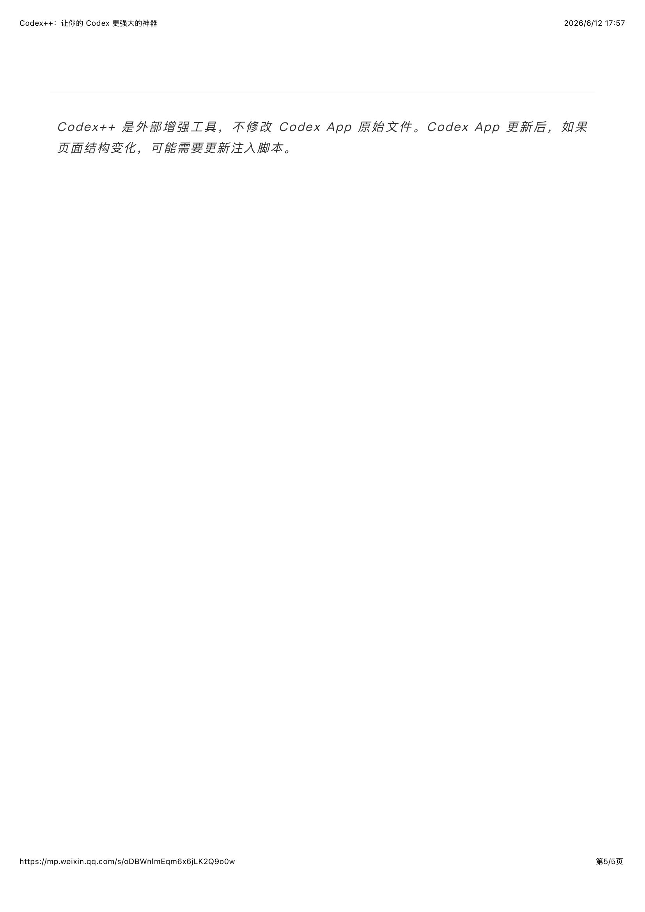

一、什么是 Codex++
Codex++ 是一个为 Codex 桌面端打造的功能增强工具，它在保留 Codex 原生体验的基础上， 提供了额外的模型接入能力、配置管理功能和实用增强，让开发者可以更灵活地使用 AI 编程助手。
Codex++ 主要解决以下痛点：
- 官方 Codex 模型选择有限，Codex++ 扩展了可用模型范围
- 支持接入多种第三方 API 后端，不再局限于单一服务商
- 提供可视化的配置管理界面，降低配置门槛
- 增加了更多实用功能，如自定义提示词、快捷键增强等

二、核心功能特性
Codex++ 提供了一系列实用功能，让 Codex 的使用体验更加强大：
2.1 多模型支持
除了 Codex 原生支持的模型外，Codex++ 还可以接入更多第三方模型 API， 包括 DeepSeek、GLM、Kimi 等国内主流模型，让开发者可以根据任务需求灵活切换。
2.2 一键配置切换
提供可视化的供应商管理界面，支持一键切换不同的 API 后端， 无需手动修改配置文件或环境变量，大幅降低使用门槛。

三、安装与配置
Codex++ 的安装过程简单快捷，按照以下步骤即可完成配置：
- 访问 Codex++ 的官方仓库或下载页面获取最新版本
- 下载对应平台的安装包（支持 macOS / Windows / Linux）
- 运行安装程序，按照引导完成基础设置
- 在设置界面中添加你需要的模型供应商
- 填写 API Key 和 Base URL，保存配置即可开始使用

四、使用场景与技巧
Codex++ 在日常开发中有多种实用场景：
- 多模型协同：复杂任务用主力模型，简单任务切换轻量模型，节省费用
- 本地与云端结合：支持接入本地 Ollama 模型，敏感项目可完全离线使用
- 自定义工作流：为不同项目配置不同的默认模型和提示词模板
- 团队协作：导出/导入配置，团队成员间快速同步设置

五、总结
Codex++ 作为 Codex 的增强工具，在保持原有体验的同时，大大扩展了其能力和灵活性。 对于希望在不同模型之间灵活切换、追求更高性价比的开发者来说，Codex++ 是一个值得尝试的选择。
